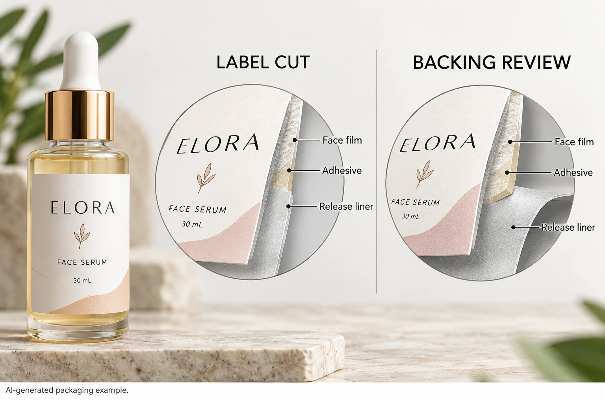

Separate the intended cuts from the observation
Identify the approved finished label path and the supplied carrier arrangement. Some jobs deliberately include cuts or perforations in particular backing areas. Do not classify every visible line as unintended damage without checking the actual delivery drawing.
The cut-shape and backing guide distinguishes the finished label boundary from the carrier boundary. That establishes what should be supplied. This article addresses whether the observed backing condition matches that instruction and what evidence the converter needs when it does not.
Record whether the observation follows the label contour, lies at a sheet separation feature or appears elsewhere. Link a front view and a backing view to the same retained section. A photo of an already peeled label alone cannot explain the carrier condition.
Use the converter's evaluation route
FINAT's technical handbook overview lists a method concerning die-strike on paper liners. That identifies a specialized evaluation topic; it does not mean a casual photograph or hand tear is a FINAT test.
Ask the converter which examination is appropriate to the supplied liner and what sample it needs. Keep any actual method reference, conditions and results with the technical report. Do not copy a method name onto an informal inspection and call the stock certified.
This guide supplies no blade-pressure setting, permissible cut depth or tensile requirement. Those depend on the construction, conversion and receiving operation. The buyer's immediate job is to connect the suspected feature with the intended cut arrangement and obtain a technically supported disposition.
Preserve the evidence before trying to run the web
Identify job, artwork, construction and roll or sheet reference. Retain the section with enough surrounding web to locate the observation, following the supplier's instructions. Avoid cutting through the only feature needed for examination.
If a break has already occurred during an authorized operation, preserve both sides where available and record its relationship to the observed cut path. Do not claim that the cut caused the break until the technical review supports that conclusion.
The liner-release guide addresses a different interface: how label and backing separate. A release value cannot establish backing integrity, and a backing examination does not approve release behavior. Keep those decisions connected without treating them as the same property.
Make a backing-condition evidence record
Use this table to obtain a review that can lead to an explicit next action.
| Field | What to record | Reviewer question |
|---|---|---|
| Approved arrangement | Label path, carrier and intentional cuts | Is this feature intended? |
| Supply identity | Job, construction, roll or sheet | Which converted material is involved? |
| Observed location | Front/back views with surrounding context | How does it relate to the intended path? |
| Event | As-received observation or identified operating event | What happened before the sample was retained? |
| Evaluation | Supplier-selected examination and sample reference | What does the technical evidence actually establish? |
| Operating status | Receiving-site instruction | May the affected supply proceed? |
| Disposition | Authorized action and corrected-supply reference if relevant | How will the decision be closed? |
Confirm the intended arrangement first, then provide the matched views and representative material requested by the converter. Have the receiving operation identify any restriction while review proceeds. Record the supplier's evaluation separately from the brand's original observation.
If the converter requests a further sample, leave the question open until the required evidence is available. Do not use one successful hand peel or a short unrecorded trial to approve a full machine run.

Two similar lines can require different decisions
A hypothetical sheet with an intentionally specified backing separation feature should be compared with its approved delivery drawing. A familiar line is not a fault simply because a different job had no such feature.
A continuous machine web with an unexplained contour line in its liner needs the converter and receiving team to evaluate that observation. Applying the sheet job's interpretation would bypass the actual question. Likewise, changing the bottle adhesive before examining the backing could add a variable without addressing the supplied web.
For cosmetic label orders, provide the job, construction, intended carrier drawing and matched front/back observations. Include the receiving method and any event already recorded. Use the contact form to prepare a message and send photos or requested samples through the separately agreed route. The form does not upload files. Ask for an identified backing review before authorizing the next use.